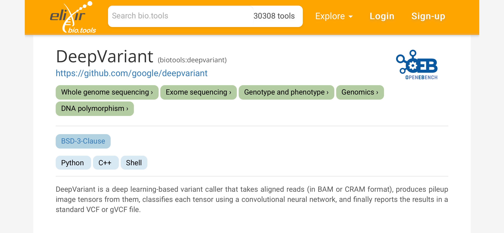
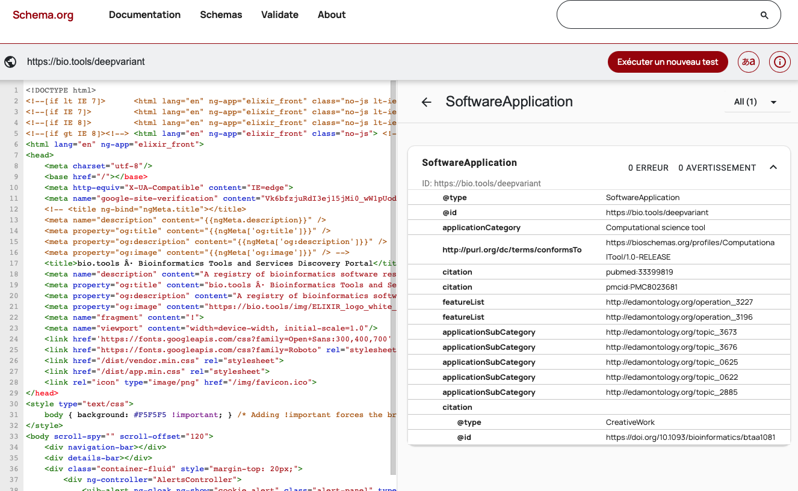
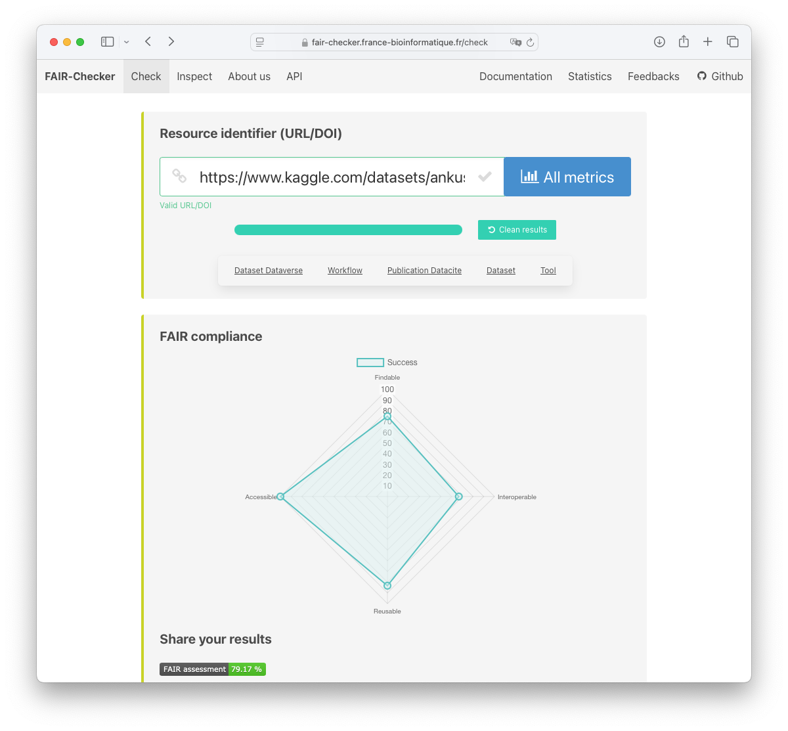
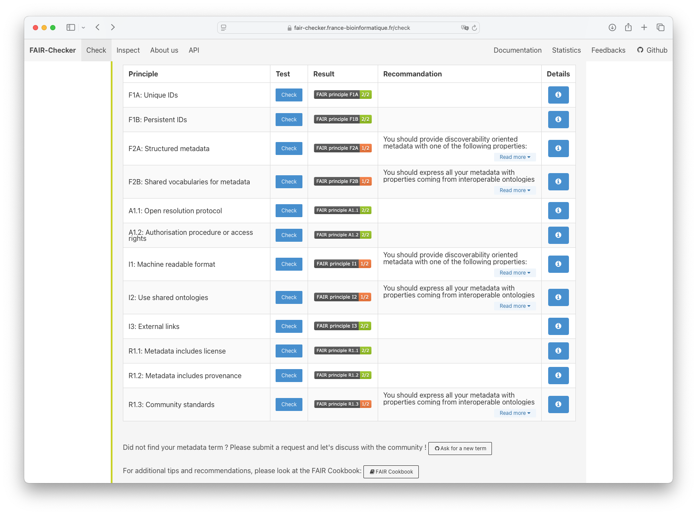

Annotating machine learning resources with Schema.org and its Bioschemas extension
This website is under construction
Step 1. What is Schema.org & Bioschemas?
Schema.org
Schema.org is a collaborative, community activity aimed at creating, maintaining, and promoting schemas for structured data on the web. Schema.org vocabulary can be used with many different encodings, including RDFa, Microdata and JSON-LD. Over 10 million sites use Schema.org to markup their web pages. Many applications from Google, Bing, Yandex and others already use these vocabularies to more easily index web content and provide rich result snippets to web users.
Bioschemas
Bioschemas is a community initiative to improve the findability of life science data. Bioschemas mostly results in metadata profiles. The profiles are based on Schema.org, i.e., it reuses terms from Schema.org and extends them when necessary. Bioschemas profiles are defined by communities which specify the metadata terms that are relevant for their domain, and their level of importance. The agree on metadata terms that are required, recommended, and optional. Several profiles are available to describe for instance datasets, softwares, workflows, genes, proteins, or training materials.
Step 2. Annotating a ML training dataset with metadata from the Bioschemas dataset profile
Here, we consider the following dataset: https://registry.dome-ml.org/review/dfyn1yvtz3#dataset. More details for this dataset can be found here in this GitHub repository.
After browsing the Bioschemas dataset profile, we figure out that we must provide the required metadata, and we should provide the recommended metadata. For brevity, we will omit the optional metadata.
The required metadata fields are (description, identifier, keywords, license, name, url)
A subset of the recommended metadata are (citation, creator, version, datePublished, distribution).
We can annotate the dataset by using JSON-LD as follows:
{
"@context": "http://schema.org",
"@type": "Dataset",
"name": "inphared.pl",
"description": "inphared.pl (INfrastructure for a PHAge REference Database) is a perl script which downloads and filters phage genomes from Genbank to provide the most complete phage genome database possible.",
"identifier": "https://github.com/RyanCook94/inphared",
"url": "https://github.com/RyanCook94/inphared",
"keywords": "Data Retrieval, Data Analysis, Bioinformatics, Phage Genomes",
"license": "https://opensource.org/license/agpl-v3",
"citation": "Cook R, Brown N, Redgwell T, Rihtman B, Barnes M, Clokie M, Stekel DJ, Hobman JL, Jones MA, Millard A. INfrastructure for a PHAge REference Database: Identification of Large-Scale Biases in the Current Collection of Cultured Phage Genomes. PHAGE. 2021. Available from: http://doi.org/10.1089/phage.2021.0007",
"creator": {
"@type": "Person",
"name": "Ryan Cook",
},
"version": "v1.2",
"datePublished": "2021-02-18",
"distribution": {
"@type": "DataDownload",
"contentUrl": "https://github.com/RyanCook94/inphared/archive/refs/tags/v1.2.zip"
}
}
For more details on JSON-LD encoding of Schema.org, please refer to the Bioschemas training material.
The last step of the annotation process consists in making accessible the metadata. This can be done by adding the metadata to the HTML code of the dataset webpage.
Step 3. Annotating an ML software by using the computational tool profile
We have seen how to manually write Bioschemas metadata in JSON-LD to annotate a sample dataset. Now, we will see how we can use a software registry to lighten the annotation process.
Bio.tools is a registry of software tools for the life sciences. It allow users to submit new tools, and to search for existing ones. During the submission process, users are asked to provide metadata about the tool. This metadata is then used to dynamically generate a JSON-LD representation on the web page describing the tool.
Let's take an example. Here, we consider the deepvariant tool. This tool is registered in bio.tools at the following URL: https://bio.tools/deepvariant: 
If we check this web page with the schema.org validation tool, we can see that Bioschemas markup is present:

The key message here is that chosing the right registry is already a key step towards FAIRer ML resources
Step 4. Evaluating the global FAIRness of the annotated ML resources
Finally we will briefly explore how to evaluate the FAIRness of the annotated resources. We will use the FAIRChecker tool. This tool allows to evaluate the FAIRness of a resource by checking the presence of semantic metadata.
If we consider a ML dataset registered in Kaggle, we can see that the dataset is FAIR enough: 
The FAIR assesment report shows scores and recommendations for each of the FAIR principles: 
Takeaways
- Schema.org and Bioschemas are key to increase the findability of machine learning resources
- You can embed JSON-LD metadata in the HTML code of your web pages
- Using registries (for software, datasets, etc.) is a good practice to lighten the annotation process
- You can evaluate the FAIRness of your digital resources with online tools such as FAIR-Checker